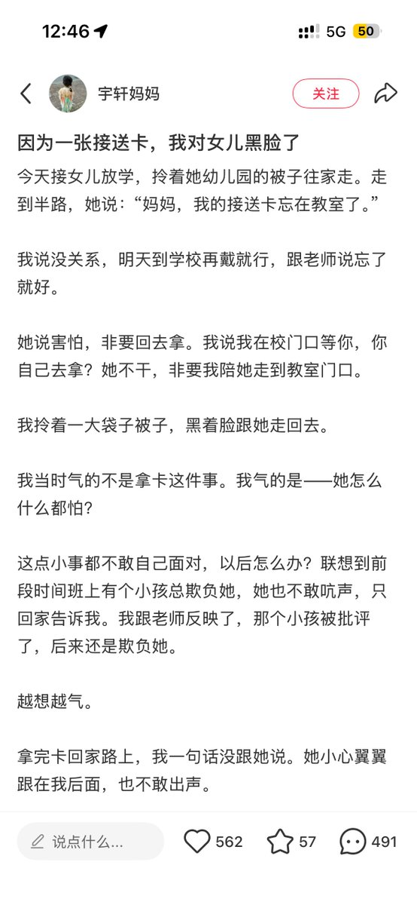
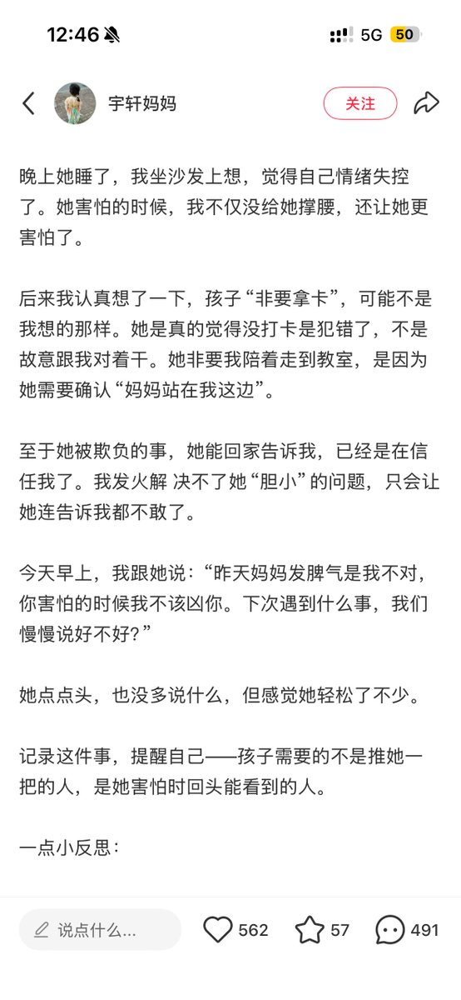
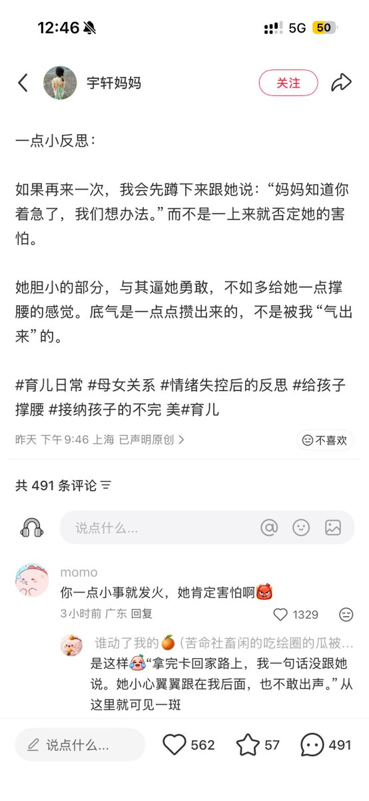

我小时候由于asd的原因，导致我特别特别守规矩，我真的很后悔，我该玩的年纪都没有玩够，别人打我，我都不敢还手，因为我怕家里面赔钱，老师和家里面骂我
我甚至三年级想自杀的时候都跟那个老师说，我害怕档案有污点，不敢死
好可悲啊，所以我后面一直都在反抗这个世界不合理的东西

我甚至三年级想自杀的时候都跟那个老师说，我害怕档案有污点，不敢死
好可悲啊，所以我后面一直都在反抗这个世界不合理的东西



小朋友会害怕，会害怕没有卡面对不了第二天“要打卡”这一规定，很多守规矩的小朋友都不知道不遵守规则会发生什么，对未知产生恐惧，会害怕第二天不知道如何面对这个问题
我以前也是这样胆小的、守规矩的小孩，因为不敢面对秩序之外的事件而崩坏了…… https://t.co/UTE9ANpSI1
我以前也是这样胆小的、守规矩的小孩，因为不敢面对秩序之外的事件而崩坏了…… https://t.co/UTE9ANpSI1